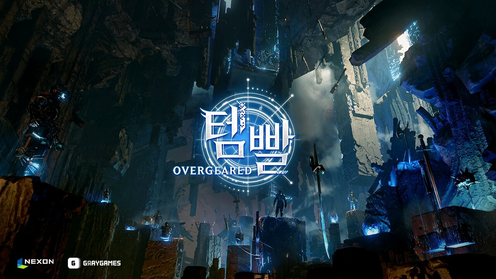

템빨 오버기어드 정체는? 13억 회 웹소설 원작 넥슨 신작 MMORPG 타이틀명 확정
'템빨'이라는 제목, 웹소설이나 웹툰 좋아하시는 분들이라면 어디선가 한 번쯤 스쳐 지나가셨을 것 같은데요. 국내 누적 조회수가 무려 13억 회를 넘긴 초대형 인기작이라, 웹소설 쪽으로는 발도 안 담그신 분들도 이름 정도는 들어보셨을 정도거든요. 그런데 이 템빨이 이번엔 게임으로 만들어진다는 소식이 떴어요. 그것도 그냥 팬메이드나 소규모 프로젝트가 아니라, 넥슨이 퍼블리싱을 맡은 정식 MMORPG로요.
2026년 7월 28일, 그동안 '프로젝트T'라는 코드명으로만 알려져 있던 이 게임의 정식 타이틀명이 마침내 「템빨: 오버기어드」(Overgeared)로 확정됐어요. 같은 날 공식 유튜브 채널과 카카오톡 채널도 함께 열리면서, 진짜 개발 중이었구나 하는 실감이 확 드는 하루였습니다. 저도 소식 듣자마자 관련 기사를 이것저것 찾아봤는데요, 오늘은 이번에 공개된 내용을 하나씩 정리해서 들고 와봤어요.
템빨: 오버기어드가 정확히 어떤 게임인가요?
「템빨: 오버기어드」는 2023년에 설립된 신생 개발사 그레이게임즈가 개발을 맡고, 넥슨이 서비스와 마케팅을 책임지는 MMORPG예요. 대형 퍼블리셔가 신생 개발사의 첫 정식 프로젝트를 이렇게 직접 챙기는 경우가 흔치는 않다 보니, 그만큼 넥슨이 이 IP에 거는 기대가 크다는 뜻으로 읽히더라고요. MMORPG는 장르 특성상 한 번 서비스를 시작하면 오래 이어가야 하는 만큼, 초반 콘텐츠 설계나 라이브 서비스 운영 계획도 앞으로 눈여겨봐야 할 부분일 것 같아요.

이게 이번에 확정된 「템빨: 오버기어드」 공식 키아트예요. 딱 봐도 분위기가 심상치 않죠?
이미지: 넥슨 제공 · 인벤 · 네이버 본문엔 받아서 재업로드 권장
혹시 템빨용사랑 헷갈리시나요? 완전히 다른 게임이에요
사실 「템빨: 오버기어드」와 「템빨용사」는 이름만 겹칠 뿐 완전히 다른 게임이에요. 헷갈리기 딱 좋은 이름이라 먼저 짚고 넘어갈게요.
- 「템빨용사」— 크래프톤 산하 5민랩 개발, 픽셀 아이템 머지 RPG, 2026년 5월 26일에 이미 글로벌 출시를 마친 게임(제가 예전에 소개해드렸던 그 게임이에요)
- 「템빨: 오버기어드」— 그레이게임즈 개발·넥슨 퍼블리싱, MMORPG, 웹소설 「템빨」 원작의 신작
개발사도 다르고, 퍼블리셔도 다르고, 장르도 아이템 머지가 아니라 MMORPG라 완전히 결이 달라요. 제가 실제로 두 게임 관련 기사를 다 찾아봤는데, 어느 매체에서도 두 타이틀을 같은 계열로 묶어서 설명한 곳은 없었어요. "얼마 전 소개해준 그 템빨용사 후속작인가?" 싶으실 수 있는데, 이번 건 완전히 다른 신작이니 헷갈리지 않으셔도 됩니다.
원작 웹소설 템빨, 어떤 작품이길래 게임으로도 나올까요
원작 웹소설 「템빨」은 게임 판타지 장르의 초대형 인기작이에요. 탄탄한 팬층을 갖고 있고요, 해외 성적까지 같이 놓고 보면 이 정도예요.
- 국내 누적 조회수 13억 회 이상
- 웹툰으로도 제작·연재 중
- 아시아 웹소설 플랫폼 '우시아월드' 인기 순위 1위
- 일본 '픽코마' 전체 매출 순위 4위
국경을 넘어서도 통하는 IP라는 게 숫자로 확실히 증명된 셈이죠. 이렇게 원작 팬덤이 두꺼운 작품을 게임으로 옮긴다는 건, 그만큼 초반부터 관심 가져줄 사람이 이미 확보돼 있다는 뜻이기도 해요. 개인적으로도 이런 '원작 팬덤 선점형' 게임은 초반 화력이 남다르더라고요.
넥슨이랑 그레이게임즈, 어떻게 만났을까요
넥슨은 2024년 4월 그레이게임즈와 '프로젝트T'의 국내·글로벌 퍼블리싱 계약을 맺으면서 '템빨' IP를 확보했어요. 그러니까 이번 타이틀명 확정 발표는 갑자기 뚝 떨어진 소식이 아니라, 2년 넘게 준비해 온 프로젝트가 드디어 겉모습을 드러낸 거라고 보면 돼요. 2023년 설립된 신생 개발사가 이렇게 큰 원작 IP와 대형 퍼블리셔를 동시에 만나 첫 타이틀을 준비해 온 셈이라, 그만큼 그레이게임즈 입장에서도 사활을 건 프로젝트일 것 같더라고요.
지금까지 확정된 것 vs 아직 미정인 것
정리해보면 타이틀명·개발사·퍼블리셔·장르는 확정됐고, 연내 출시는 목표로 발표된 상태예요. 구체적인 출시 날짜를 포함한 세부 사항은 아직 안 나온 이른 단계고요. 헷갈리지 않게 나눠볼게요.
- ✓ 정식 타이틀명 「템빨: 오버기어드」(Overgeared), 구 프로젝트명 '프로젝트T'
- ✓ 개발 그레이게임즈 · 퍼블리싱 넥슨
- ✓ 장르 MMORPG
- ✓ 연내 국내·글로벌 출시 목표(넥슨 발표 기준, 구체 일정 미공개)
- ✓ 7월 28일 공식 유튜브·카카오톡 채널 개설 + 티저 영상 공개
반대로 아래는 아직 공식적으로 나온 게 없는 부분이에요. 지어서 말씀드릴 수 없으니 정직하게 비워둘게요.
- 구체적인 출시 날짜(월·분기 포함)
- 사전예약 시작일
- 과금 구조(BM)
- 플랫폼 — PC인지 모바일인지, 아니면 둘 다인지
- 클래스(직업) 수
이 부분들은 나중에 자세한 정보가 풀리면 그때 다시 정리해서 들고 올게요.
티저 영상엔 어떤 장면이 담겼나요
공개된 티저 영상은 검푸른 빛이 감도는 던전 같은 공간에서 로고가 서서히 드러나는 연출로 시작해요. 어두운 동굴 사이로 푸른 빛이 새어 나오고, 그 사이에 여러 자루의 검이 각기 다른 모양으로 꽂혀 있는 장면이 인상적이었는데요. 사실 '템빨'이라는 말 자체가 '아이템빨'을 줄인 표현이잖아요 — 장비가 캐릭터의 힘을 좌우한다는 뜻인데, 이번 티저도 그 정체성을 시각적으로 잘 보여주는 느낌이었어요. 직접 보고 싶으시면 공식 티저 사이트에서 볼 수 있어요.
템빨: 오버기어드 정리
이번 소식, 한 줄로 줄이면 — 13억 회 웹소설 「템빨」이 그레이게임즈·넥슨 손을 거쳐 MMORPG 「템빨: 오버기어드」로 다시 태어난다는 거예요. 아직 출시일도, 플랫폼도, 사전예약 일정도 안 나온 이른 단계지만, 원작 팬덤이 이 정도로 두꺼운 IP가 대형 퍼블리셔를 만났다는 것만으로도 기대할 이유는 충분한 것 같아요. 그리고 다시 한번 짚자면, 「템빨용사」랑은 완전히 다른 별개의 게임이라는 것도 잊지 말아 주세요. 저도 앞으로 새 정보가 나올 때마다 이 글에 이어서 정리해드릴게요.
✔ 헷갈리기 쉬운 「템빨용사」 글 같이 보기
· 템빨용사 초보 가이드 — 가방 배치·직업·펫 성장까지 정리했어요 (발행 시 링크 연결)
· 템빨용사 요즘 메타 공략 — 속성 상성·전설 강화·막힌 챕터 돌파 정리 (발행 시 링크 연결)
· 템빨용사 조합 가이드·초반 세팅 — 가방 배치·머지 시너지 정리 (발행 시 링크 연결)
참고한 곳
· 템빨: 오버기어드 공식 티저 사이트
· 템빨: 오버기어드 공식 유튜브